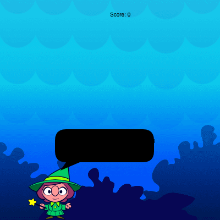
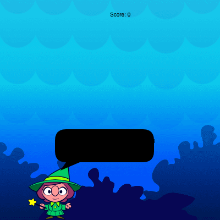

.jpg)
Hi there !! This is Anokhi – Anokhi the unique…..
I am a coding girl and I love to code.
I have picked up this passion recently , so let me take you through my life journey till date …
My birth coincides with the birth of Lord Krishna, I was born in Mumbai on 01 September 2010 (Krishan Janamasthmi).
I am native of Sonipat (Haryana) also my father being in Indian Navy, was posted at various places – Kochi, Chennai, Mumbai etc.
I had opportunity to absorb multi-culture of our culturally rich country.
I love Dosa of Kerela, Podi idli of Chennai, Wada Pao of Maharastra and Buttered Aaloo Paratha of Haryana.
I really feel myself to be immersed in tastes and flavours of India, I feel truly Indian !!
I enjoy lot of outdoors like Horse Riding, Swimming and cycling but equally have fun while playing Badminton and Squash.
My heart and soul is always ready for dance – dance on any music any tune and at any time.
I had humble opportunity to perform Bharatnatyam on stage and performed with Army Jazz band as lead singer.
And now, my passion Coding is taking me ahead in life.
I was selected for Silicon Valley Contest but due to COVID, the program was stalled.Never mind , sometime soon again.
My dream is to code programs or apps that help elderly and under-privileged, that saves our environment, that makes this world a little better then yesterday !!
 
